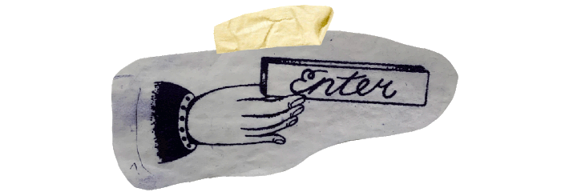

Vroeger konden zeelieden een zwaluw laten tatoeëren als ze 5000 zeemijl gevaren hadden. Militairen gingen voor de 'Rose of no mans land' als ode aan de zusters van het rode kruis en criminelen lieten sterren op hun knieën zetten om te laten zien dat ze niet buigen voor de overheid.
Wat is in deze tijd de essentie van het tatoeëren? En hoe inhoudelijk is de beeldtaal van het tatoeëren tegenwoordig eigenlijk nog?
Tattooism is een project van tatoeëerder en illustrator Jochem Vis, beter bekend als ''Yung Johan''. Gebaseerd op de tijdloze clichés van het oldskool tatoeëren, heeft Johan deze klassieke vorm een inhoudelijke twist weten te geven door hedendaagse thematieken aan te gaan. een ode aan de traditionele tattoo en een poging om meer diepgang te creëren door op zoek te gaan naar nieuwe symbolieken.
